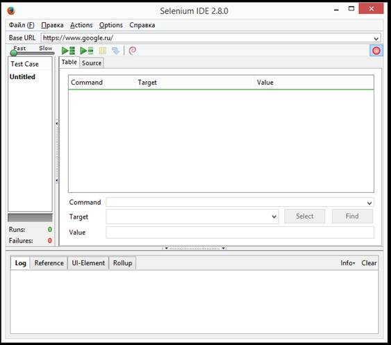
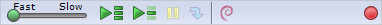
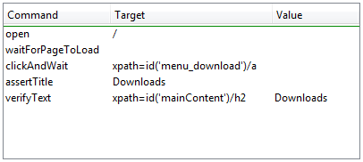
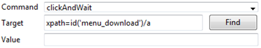
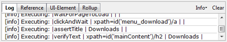
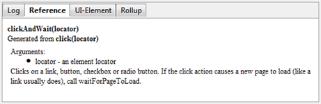

Интерфейс Selenium IDE Plugin

Панель меню
Меню File (Файл) имеет разделы Test Case (Тестовый сценарий) и Test Suite (Набор тестов). Эти разделы позволяют создать, открыть, сохранить или экспортировать тестовый сценарий в код на любом желаемом языке программирования. также имеется возможность открыть недавно использованный тестовый сценарий. аналогичные действия можно совершить и с набором тестов.
Меню Редактирование (Edit) позволяет выполнять операции копирования, вставки, удаления, отмены изменений и выбора всего набора команд вашего тестового сценария.
Меню Функции (Options) позволяет изменить настройки дополнения. В этом меню вы можете установить тайм-аут для определенных команд, добавить пользовательские расширения основного набора команд Selenium, а также настроить формат (язык), который будет использоваться для сохранения ваших тестовых сценариев в будущем.
Меню Помощь - это стандартное меню справки по Firefox, только опция UI-Element Documentation (Документация по UI-Elements) относится к Selenium IDE.
Меню Действия (Actions) дублирует панель инструментов.
Панель инструментов (Toolbar)
На панели инструментов находятся кнопки, с помощью которых можно управлять выполнением тестовых сценариев, в том числе пошаговым выполнением для отладки. Крайняя правая кнопка, на которой изображена красная точка - это кнопка записи.

|
|
Управление скоростью: позволяет контролировать скорость выполнения тестового сценария. |
|
Запустить все: запускает весь набор тестов, в случае, если он содержит несколько тестовых сценариев. |
|
|
|
Запустить: «апускает выбранный в данный момент тест. |
|
Пауза/Возобновить: устанавливают и возобновляют исполнение текущего тестового сценария. |
|
|
|
Шаг: позволяет выполнять тест по шагам, то есть по одной команде за раз. ѕредназначено для отладки тестовых сценариев. |
|
Применить правила группировки: эта функция дает возможность группировки повторяющихся последовательностей команд Selenium в одно действие. |
|
|
Запись: записывает действия пользователя в браузере. |
Панель тестового сценария
На этой панели отображается набор команд Selenium, составляющих тестовый сценарий. На ней расположены две вкладки, первая из которых, Table (Таблица), отображает команды и их параметры в удобном для восприятия табличном виде.

Вкладка Source (Исходный код), отображает тестовый сценарий в формате, используемом для сохранения файла. по умолчанию это HTML, однако он может быть изменен на язык программирования. Вкладка Source (Исходный код) позволяет пользователю редактировать тестовый сценарий в текстовой форме, в том числе используя операции копирования, вырезания и вставки.
Поля ввода данных Command (Команда), Target (Цель) и Value (Значение) отображают выбранную в данный момент команду, а также ее параметры. — помощью этих полей можно модифицировать выбранную команду. «начение первого параметра, описанного во вкладке Reference (Справка) нижней панели, указывается в поле цель. если в Справке описан также второй параметр, то он всегда указывается в поле ЗначениеФ.

Закладки Log, Reference, UI-Element, Rollup (Лог, Cправка, UI-Element, Группировка)
Нижняя панель используется для четырех различных функций: лога, справки, документациии по UI-Element и группирования в зависимости от того, какая вкладка выбрана.
Лог
Когда пользователь запускает тестовый сценарий, в панели данной вкладки автоматически появляются информационные сообщения и уведомления об ошибках. Эти сообщения часто полезны при отладке тестового сценария. Кнопка Очистить (Clear), которая позволяет очистить лог. Кнопка ИнформацияФ (Info) является выпадающим меню, в котором можно выбрать различную степень детализации записи в лог.

Справка
Накладка Справка выбирается по умолчанию каждый раз, когда пользователь вводит или модифицирует команды и параметры в табличном режиме. На этом режиме панель У—правкаФ отображает информацию о текущей команде.

Создание тестовых сценариев
Существует три основных способа разработки тестовых сценариев.
Запись
Большинство начинающих пользователей начинают создание тестовых сценариев с записи своего взаимодействия с веб-сайтом. при первом запуске Selenium IDE запись по умолчанию включена. Во время записи Selenium IDE автоматически вставляет команды в тестовый сценарий, основываясь на действиях пользователя. ќбычно это команды:
- при нажатии на ссылку Ц команды click или clickAndWait
- при вводе данных Ц команда type
- при выборе опции из выпадающего списка Ц команда select
- при нажатии на чекбокс или переключатель Ц команда click
Наот некоторые неочевидные вещи, о которых следует знать:
- Для того, чтобы команда type записалась, может потребоваться кликнуть где-нибудь на странице.
- Клик по ссылке обычно записывает команду click. пользователю в большинстве случаев будет необходимо изменить ее на команду clickAndWait, чтобы удостовериться, что тестовый сценарий дождется загрузки новой страницы. На противном случае Selenium продолжит выполнять команды до того, как загрузятся все элементы пользовательского интерфейса. Это может привести к неожиданным сбоям тестового сценария.
Добавление проверок через контекстное меню
На тестовых сценариях бывает необходимо выполнить проверку параметров веб-страницы. Для этого необходимо выбрать элемент веб-страницы и кликнуть правой клавишей мыши на выбранном тексте. На контекстном меню должны появиться команда Show All Available Commands (Показать все доступные команды). На выбор открывает список со множеством команд с параметрами, рекомендованными для проверки выбранного элемента.
Редактирование
Вставка команды
В табличном виде
Выберите место в тестовом сценарии, куда вы хотите вставить команду. чтобы сделать это, кликните левой кнопкой мыши на той строке на панели тестового сценария, перед которой вы хотите вставить новую команду. Кликните правой кнопкой мыши и выберите Вставить команду. после появления пустой строки в поля ввода введите свою команду и ее параметры.
В режиме исходного кода
Выберите место в тестовом сценарии, куда вы хотите вставить команду. „тобы сделать это, кликните левой кнопкой мыши между теми командами, где вы хотите вставить новую команду. Наведите HTML-теги, необходимые для создания строки в три колонки, которые содержат команду, первый параметр и второй параметр. Перед переключением обратно в табличный вид убедитесь, что сохранили тест.
Вставка комментария
На Selenium существует возможность добавления комментариев для улучшения читаемости тестового сценария. Эти комментарии игнорируются во время выполнения теста.
В табличном виде
Выберите строку в тестовом сценарии, куда вы хотите вставить комментарий. ликните правой кнопкой мыши и выберите Вставить комментарий. Теперь в поле Команда введите нужный комментарий, который будет выделен фиолетовым цветом.
В режиме исходного кода
Выберите место в тестовом сценарии, куда вы хотите вставить комментарий. омментарий добавляется с помощью HTML-тегов, в следующем формате: -текст вашего комментария-->.
Редактирование команды или комментария
В табличном виде
Просто выберите строку, которую нужно изменить, и отредактируйте ее, введя нужные значения в поля Команда, Цель и Значение.
В режиме исходного кода
Во вкладке Исходный код просто меняйте любые строки по своему желанию: команды, параметры или комментарии.
Как открыть и сохранить тестовый сценарий
Как и в большинстве других приложений, в Selenium IDE есть команды Открыть и Сохранить в меню Файл. Однако следует отметить, что Selenium IDE различает тестовые сценарии и наборы тестов. При сохранении тестов для последующего использования вы можете либо сохранить отдельные тестовые сценарии, либо целые наборы тестов. ѕри открытии сохраненного ранее тестового сценария или набора тестов Selenium IDE отображает содержащиеся в нем команды Selenium в панели Тестовый сценарий.
Запуск тестовых сценариев
На IDE существует большое количество вариантов запуска тестового сценария. Наы можете выполнить тестовый сценарий целиком, остановить и возобновить его, выполнить в пошаговом режиме, выполнить только одну команду, над которой сейчас идет работа, а также запустить весь набор тестов.
| Запуск тестового сценария | Нажмите на кнопку Запустить, чтобы запустить отображаемый в данный момент тестовый сценарий. |
| Запуск набора тестов | Нажмите на кнопку Запустить все, чтобы запустить все тестовые сценарии в загруженном наборе тестов. |
| Пауза и возобновление | Кнопка Пауза используется для того, чтобы остановить тестовый сценарий во время его выполнения. ѕосле этого кнопка изменится на Возобновить. Ќажмите ее для продолжения. |
| Остановка в сценарии | Пользователь может создать точку останова в тесте, чтобы установить точку останова, выберите команду, кликните на ней правой кнопкой мыши и из контекстного меню выберите Toggle Breakpoint (Установить точку останова). |
| Старт с заданного места | Пользователь может указать Selenium IDE начать выполнение с определенной команды в тестовом сценарии. Чтобы установить точку старта, щелкните правой кнопкой мыши на нужной команде и выберите из контекстного меню Set/Clear Start Point (Остановить/убрать точку старта). |
| Выполнение любой отдельной команды | Дважды кликните на любую команду, чтобы выполнить только ее. |